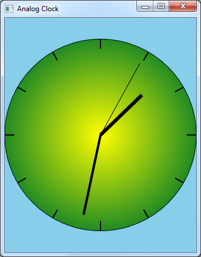

This sample application shows how to use transforms in Direct2D to draw the hands of a clock.
The Direct2D Clock sample application draws an analog clock, as shown in the screen shot that follows. This sample is discussed in Applying Transforms in Direct2D.

This sample is available here.
Learn to Program for Windows: Sample Code
Applying Transforms in Direct2D
Â
Â